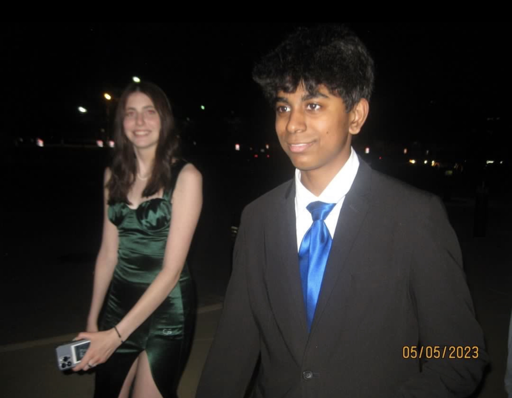
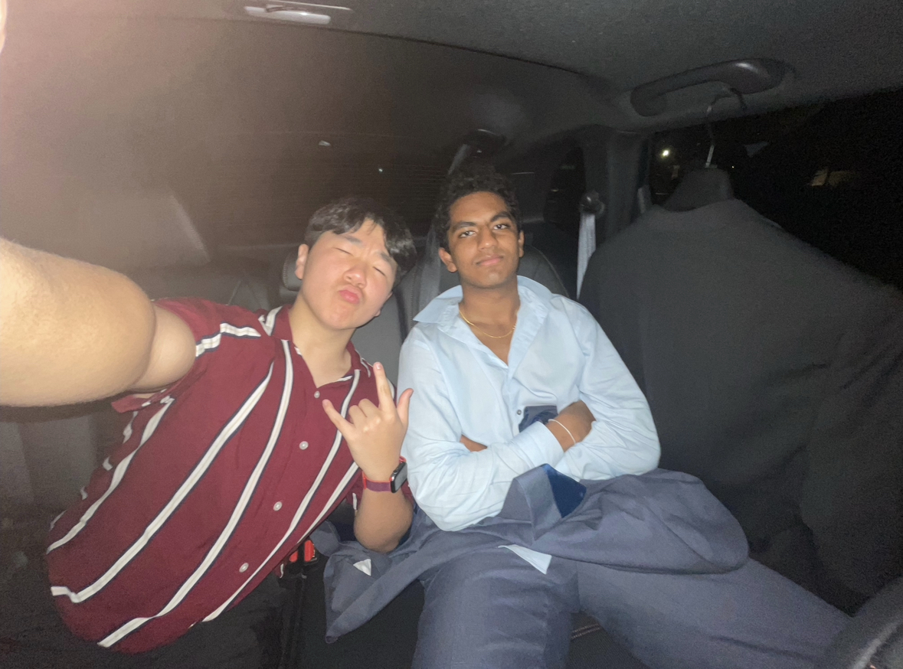
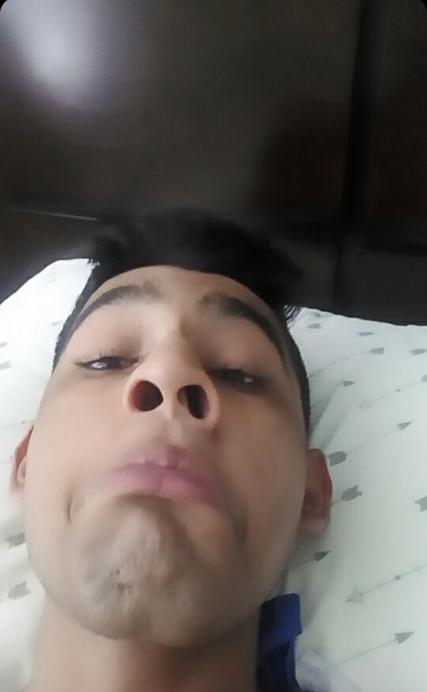
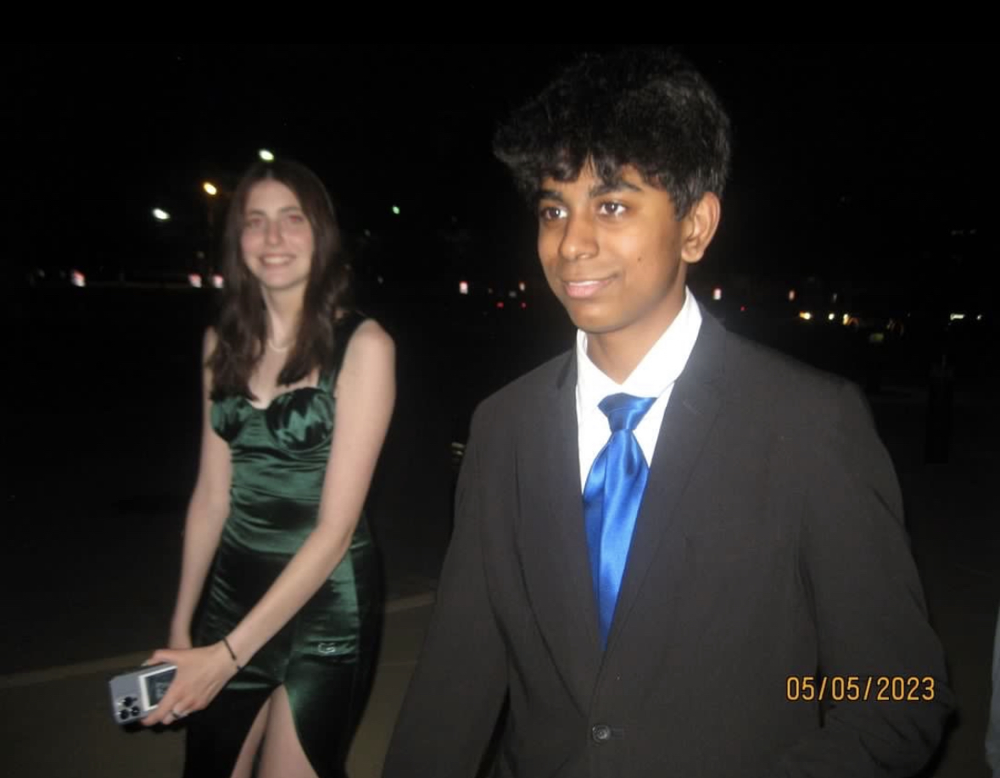
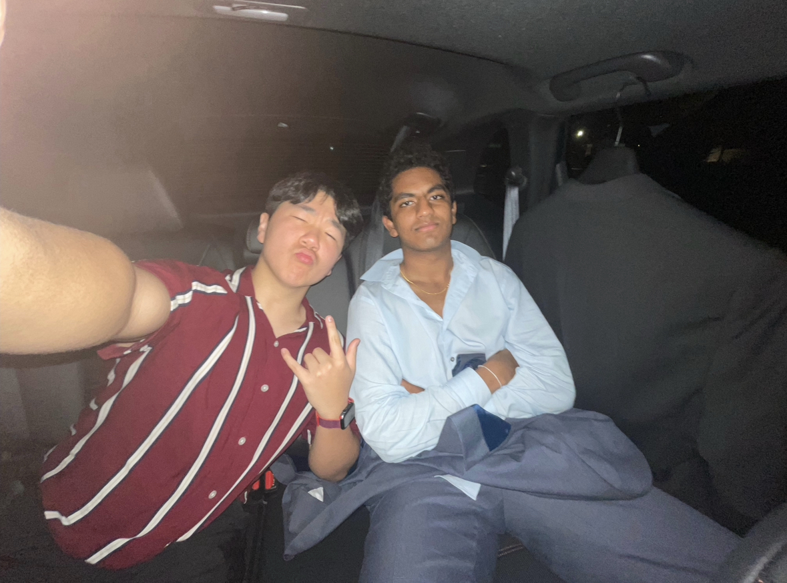
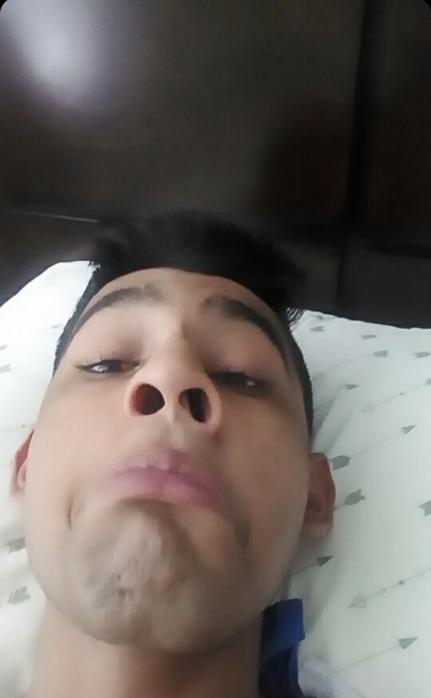

About Rizz Academy

Rizz Academy is an institution that improves individuals' rizz. Students must be 16 or older, there is no limit to how high the age range can go, we pair students in their age class so there is plenty of separation. Rizz actually comes from the word charisma. It means "spitting game" or the ability to "pull". Rizz is defined as skill in charming or seducing a potential romantic partner. Rizz Academy enhances your strengths and improves your rizz. If you graduate from the academy and don't have a baddie within 2 years, you get half of your tuition money back.
We are in our first year of production so you all are lucky enough to be the academy's first alumni! For you to be get consideration from us, you must take our RIZZPLACEMENT TEST and achieve a score of 5 or more, if you're below that, there's no hope for you. If you have any questions, that's tough because we don't have any contact info. However, you can visit our campus (shown in picture). All of our classes are online but we are going to gatekeep which platform. Click the navigation to see more about this academy. Thank you for visiting!
Admissions
To be admitted into Rizz Academy, you must be an ambitious student willing to hear opinions and criticisms from multiple perspectives. At times you will realize how down bad you are but that's okay because the academy will help you improve yourself. We require an above average GPA throughout your years and shown personal interest in the field of "pulling". This can be done through proof of sliding into dms or attempts of rizz in any legal and ethical form. After all, we don't want students that aren't ready to better themselves nor those who aren't willing to work with discipline towards their goal.
Like the SAT for most colleges, we require you to take our RIZZPLACEMENT TEST and achieve a score of 5 or more for considerstion into the academy, if you're below that, there's no hope for you.
With that being said, here is an average Rizz Academy Senior:

Academics
We offer overnight camps and tutoring sessions in VC (voice channel) with one professor or TA or in a class. If in a class, you will learn general tips and tricks along with best practices. This could include certain features women notice first about men, like their eyes. Or features men notice first about women, like their hair. Although not always objective, you will learn mostly general standards here.
If you've paid for time with one person, you will either be assigned a professor or a TA, both are extraordinary and will be the person that you can talk about anything with. These are the people that you can tell your situation with someone. The professors or TAs will not judge you more than academically required. They will help you with your specfic situation and condition. However, if you do something illegal, they will be obligated to notify authorities. This is just for everyone's safe being.
Before & After
Here are some pictures of people before Rizz Academy and after Rizz Academy
 





Testimonials
Here's what some of our students have to say about their experience at Rizz Academy:
"Rizz Academy changed my life. The instructors were knowledgeable, the facilities were top-notch, and the community was supportive and welcoming. I'm grateful for the skills and knowledge I gained here."
— Hrithik Arcot, Class of 2021
"I was hesitant to enroll at first, but I'm so glad I did. Rizz Academy gave me the confidence and skills I needed to pursue my dream man. I highly recommend it to anyone looking to advance their rizz."
— Shriya Mummaneni, Class of 2019
"Game is Game"
— Edward Sun, Class of 2022
Developed by Carmel Web Development